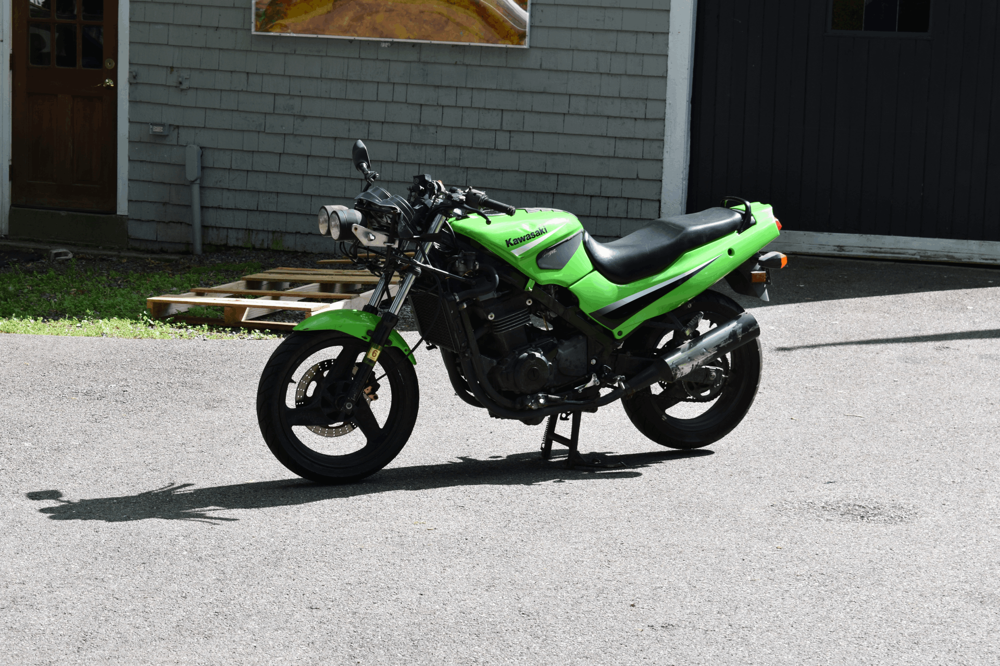

About Me & This Site
This is my website where I go over a few motorcycles, primarily mine, my uncle's, and my roommate's. Whether it be tips, tricks, repairs, or mods, you'll find them all here. — Enjoy!
I've been riding for about a year and a half now. It all started back in high school when my friend challenged me to a $1,000 race in our senior year of college. At the time, I was against motorcycles, scared that they would be what killed me. But it sparked my interest and led me to learn more about them. <3
After some time, a different friend and I made an agreement: if we both passed Calculus II that semester, we would buy helmets and get our permits. Sure enough, the end of Calc II came around, and we both passed. We went straight to CycleGear and bought two Shoei RF-SR helmets with tinted visors. Not a cheap purchase, mind you, but we wanted to be as safe as possible (ignore the lack of gear for quite a while after that).
The Motorcycles
Honestly, there's more of them than I'd like to admit, and I'm afraid the number is only going to increase...
| Motorcycle name | Owner | Purchase Date | Picture | Work |
|---|---|---|---|---|
| 2006 Kawasaki Ninja 500 | Jack | 2023 |  | Custom from fairing, electrical, clutch cable |
| 2004 Kawasaki Ninja 500 | Jack | 2024 |  |
Repainted, clutch cable, throttle cable |
| 2002 Suzuki Bandit 600 | Roommate | 2025 | 
|
Crankcase cover, gear shift linkage, clutch handle |
| 2008 Kawasaki KLR650 | Uncle | 2020 | TODO | N/A |
| 2007 Kawasaki KLR650 | Uncle | 2019 | TODO | Stator |
The Ninja 500s
Oh boy, the Ninja 500... More specifically the EX500D model (for both the 2004 and 2006). A great bike for any beginner to start on. However, I can't say I would recommend buying one with a rebuilt title. The first EX500D I bought was the 2006, and oh boy did it have issues. For starters, it didn't even come with a frontend and instead had a custom metal bracket holding in two circular lights. A stock EX500D would normally have a more boxy glass headlight instead with a smooth front fairing.
The electrical system was another nightmare in it's own. The previous owner had clearly done the bare minimum for the state to consider it "rebuilt". Half the connections were exposed and dangling around, the other half were held together with electrical tape and prayers. It appears that the entire front end had been re-done from scratch with wire he had in his barn.
Despite all the headaches, my first EX500D has taught me more about motorcycle mechanics than any other bike I've owned. There's just something about a bike that forces you to learn everything about it just to keep it on the road. The engine though? Absolutely bulletproof that thing will run forever. Once you spend the time to figure out the hellscape the previous owner has left it in, it's actually a fantastic machine.
The 2004 model I picked up later was in much better condition, but with far more miles. Admittedly, it still needed its fair share of work. But hey, at least this one came with all its original* body panels! A recent fresh coat of paint brought it back to life and a good old tune up, and now it runs like a dream.